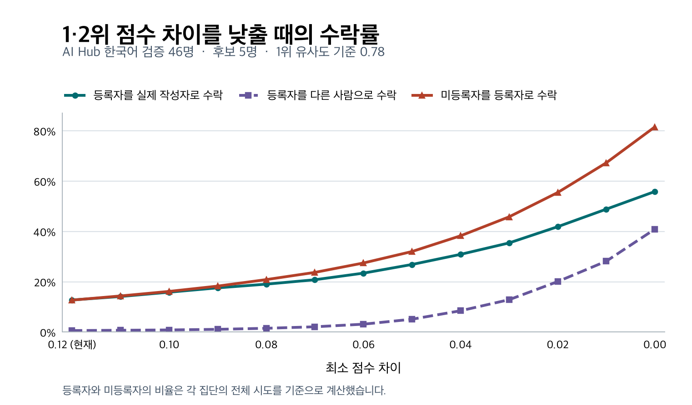

한국어 타건 평가
영문 데이터로 학습한 KeyPrint 인코더가 한국어 스마트기기 타건에서도 ① 등록 후보 5명 중 실제 작성자를 1위로 찾을 수 있는지, ② 미등록 외부인 입력을 안전하게 보류·차단할 수 있는지 두 공개·승인 자료(AI Hub, FACT)로 검증했습니다.
AI Hub에서 확인한 당일 한국어 순위
중학생 국어 서술형 문제 풀이 중 수집된 스마트기기 키보드 기록을 사용했습니다. 같은 날 서로 다른 문항 5개로 프로필을 등록하고, 이후 작성한 2개 문항을 묶어 한 번의 질의로 판별했습니다(답변당 첫 40타의 키 눌림 간격 DD만 사용). 초기 공개본(1위 73점 이상·간격 0점)과 오픈셋 기준을 강화한 현재 배포본(PR #5, 1위 78점 이상·1·2위 간격 12점 이상)의 비교는 다음과 같습니다.
| 평가지표 | 기존 공개본 (간격 0점) | 현재 배포본 (PR #5, 간격 12점) |
|---|---|---|
| 작성자가 1위 (보류 전 순위) | 61.27% | 58.61% |
| 작성자로 최종 수락 | 53.41% | 12.75% |
| 다른 등록자로 오수락 | 35.92% | 0.60% |
| 미등록 가능성으로 판별 보류 | 10.66% | 86.65% |
| 미등록 외부인을 등록자로 오수락 | 72.47% | 12.70% |
보류 기준을 적용하기 전 1위 정답률은 58.61%(무작위 추측 20%의 약 2.9배)이며, 기존 공개본과의 차이(−2.66%p, 학생 단위 95% 신뢰구간 −11.74%p~+6.81%p)는 통계적으로 유의미하지 않습니다. 대신 1·2위 격차 조건을 추가함으로써 다른 등록자로 잘못 지목하는 비율을 0.60%로, 미등록 외부인 오수락을 72.47%에서 12.70%로 크게 낮췄습니다.
평가 전 데이터 감사에서 국어 키보드 원본 9,677건(865명) 중 이벤트 시각까지 완전히 중복된 59개 그룹(319건)을 전량 제외해 9,358건(849명)만 남겼습니다. 중복 제거 후 다른 날짜 기록이 남은 학생은 0명이어서 당일 평가로 한정했습니다. 데이터 정제 과정 상세
FACT 스마트폰 한국어·영어 비교
동일 참가자 50명이 Galaxy S8 스마트폰에서 한국어와 영어를 모두 입력한 연구 부록입니다. 원 논문의 등록·시험 분할을 그대로 따르고 키 눌림 간격만 동일한 터치 경로로 평가했습니다(입력 날짜와 지문 ID는 원 자료에 비공개).
참가자 50명을 5명씩 조로 나누고, 각 기록의 처음 76타(데모 한국어 문장의 두벌식 타수 중앙값)만 추출해 평가했습니다. 1인당 5개 기록으로 프로필을 등록한 뒤, 별도 시험 기록을 2개씩 묶은 250건에서 작성자를 판별했습니다. 또한 작성자가 속하지 않은 다른 5명 후보 조와 비교해 미등록 외부인 오수락률도 250건에서 함께 측정했습니다.
| 5인 후보 기준 지표 | 기존 공개본 (간격 0점) | 현재 배포본 (PR #5, 간격 12점) |
|---|---|---|
| 작성자가 1위 (보류 전 순위) | 70.8% (177건) | 74.8% (187건) |
| 작성자로 최종 수락 | 70.4% (176건) | 7.6% (19건) |
| 다른 등록자로 오수락 | 29.2% (73건) | 0.0% (0건) |
| 미등록 가능성으로 판정 보류 | 0.4% (1건) | 92.4% (231건) |
| 미등록 외부인을 등록자로 오수락 | 87.6% (219건) | 13.2% (33건) |
수락·보류 기준 적용 전 작성자가 1위에 오른 비율 차이는 +4.0%p(참가자 단위 95% 신뢰구간 -2.8%p~+10.8%p)로, 순위 자체의 우열을 단정하기는 어렵습니다. 대신 기존 공개본(1위 73점 이상, 간격 0점)에서 87.6%에 달하던 미등록 외부인 오수락을 막기 위해, 현재 버전(PR #5)은 1위 점수 78점 이상과 1·2위 격차 12점 이상을 동시에 요구합니다. 그 결과 다른 등록자로 잘못 수락한 비율은 0.0%가 되었고, 보류된 231건 중 230건은 1위 점수는 통과했으나 2위와의 격차가 작아 보류됐습니다.
비교 후보를 50명 전원으로 늘리면 1위 정답률은 기존 25.2%, 현재 버전(PR #5) 26.8%로 낮아지고 오픈셋 판정은 250/250건 모두 보류했습니다. 반대로 5명 후보에서 평균 약 235타인 원래 기록 전체를 사용하면 1위 정답률은 기존 84.0%, 현재 버전 85.6%까지 높아졌습니다.
같은 50명의 영어 타건에서는 1위 정답률이 기존 75.2%, 현재 배포본(PR #5) 72.0%였으며, 현재 버전의 정답 수락은 10.4%, 타 등록자 오인식은 0.4%, 미등록 외부인 오수락은 4.4%였습니다. FACT 한국어·영어 전체 집계
수락 간격 완화에 따른 오수락 트레이드오프
현재 터치 수락 기준(1위 점수 0.78, 1·2위 간격 0.12)은 영문 터치 모사 검증셋에서 외부인 오수락을 최소화하도록 정한 값입니다. 한국어 AI Hub 검증셋에서는 등록자 질의의 83.43%가 1위 점수는 통과하고도 1·2위 간격이 좁아 보류됐습니다.
만약 보류를 줄이기 위해 1위 점수 하한(0.78)은 고정한 채 1·2위 최소 간격을 0.12에서 0.00까지 낮추면, 아래 그래프와 표처럼 정답 수락이 늘어나는 만큼 미등록 외부인 오수락도 가파르게 증가합니다.

| 1·2위 최소 간격 | 정답 수락 | 등록자 오인식 | 미등록자 오수락 |
|---|---|---|---|
| 0.12 (현재 기준) | 12.75% | 0.60% | 12.70% |
| 0.06 (절반 완화) | 23.42% | 3.13% | 27.46% |
| 0.00 (간격 해제) | 55.87% | 40.90% | 81.55% |
데모에 적용한 판단
참가자가 모두 등록한 상태에서 체험할 때는 순위 정보가 유용하고, 미등록 외부인이 섞일 수 있는 환경에서는 엄격한 보류 기준이 필요합니다. 이에 비교 후보가 2명 이상이면 화면에 예상 작성자 1위 이름과 함께 미등록 가능성을 반영한 판정 수락 또는 판정 보류를 분리해 표시합니다(후보가 1명일 때는 1:1 리듬 일치도를 비교합니다).
동일한 인코더 위에서 코호트 보정 전 코사인 점수(60.30%)와 한국어 순위 가중치 학습 점수(62.05%)도 실험했으나 데이터셋마다 우열이 엇갈리고 신뢰구간이 0을 포함해, 데모에는 과적합 위험이 없는 기존 정규화 점수를 유지했습니다. 순위 점수 파일럿 상세
본 결과는 스마트기기 화면 키보드의 눌림 간격에 대한 오프라인 측정치이며, PC 물리 두벌식 키보드·실시간 브라우저 한글 조합·장기 날짜 변화에 대한 일반화는 별도 측정이 필요합니다.